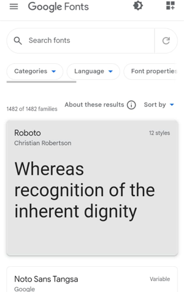
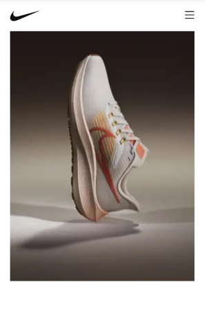
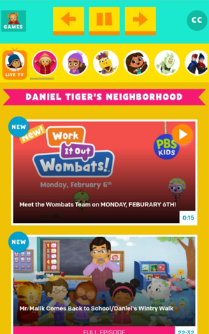

Clean Design
Google Fonts API
Clean design comes mostly from the fact that all the fonts are separated into boxes and have spacing between them it just makes it more simple.
Google Fonts API has a good use of white-space making it have a clean design. The spacing around all the objects allows people who are viewing the page to stay calm when looking for a font.
Contrast
Nike's
 Contrast is when two or more very different (opposite) elements are placed together on the page. It can aid in legibly improve visual interest, organization and hierarchy and highlighting the main message.This Nike Sports Wear advertisement is a good example of contrast with the use of opposite colors and textures. This image features various colors that contrast, making the shoe "highlight" to attract the viewer's attention.
Repetition
PBS Kids
The Principle of Repetition is applied when the same or similar elements are used throughout a design. It portraits a sense of harmony and consistency.
PBS KIDS home page is a perfect example of repetition in design. The logo's circle shape is also utilized on the icons throughout the site.